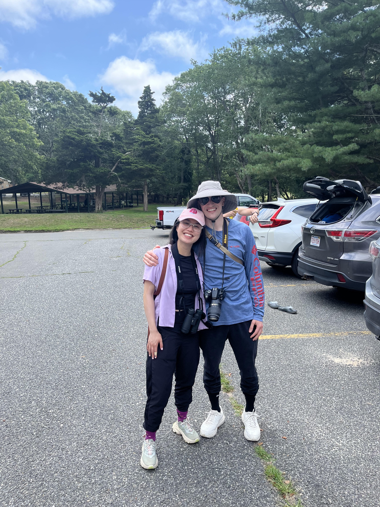
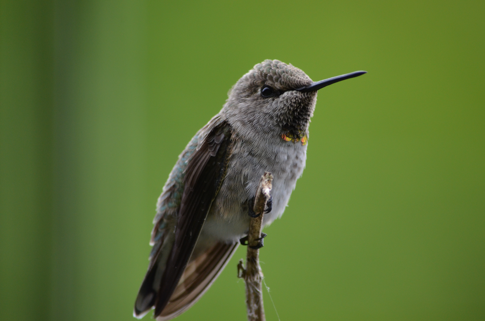
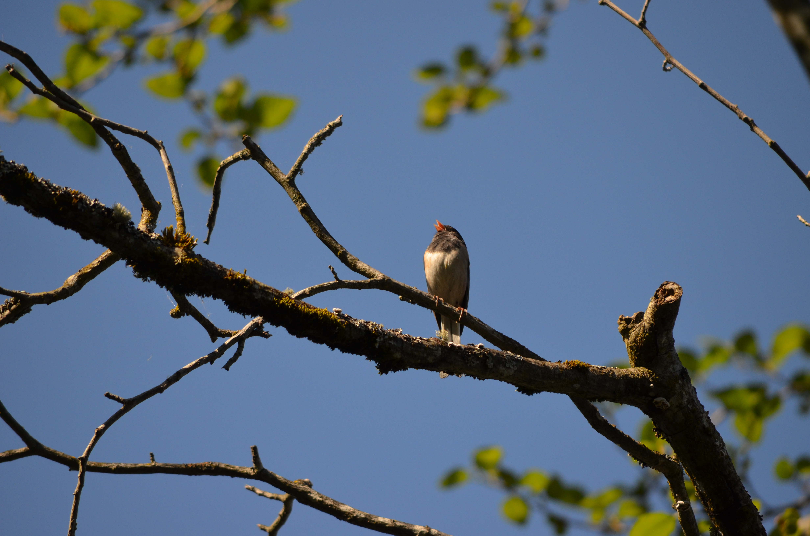
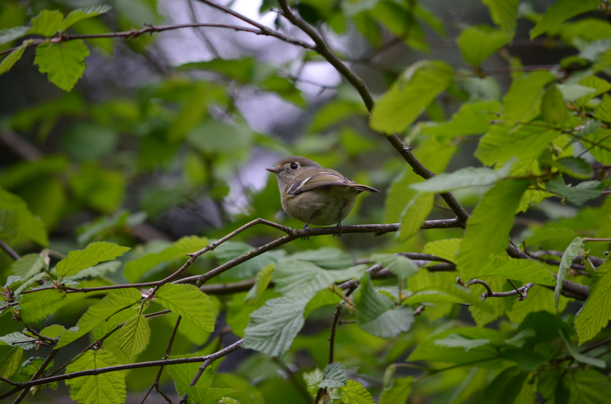
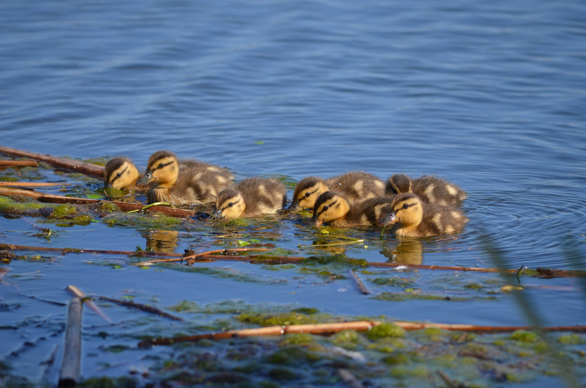
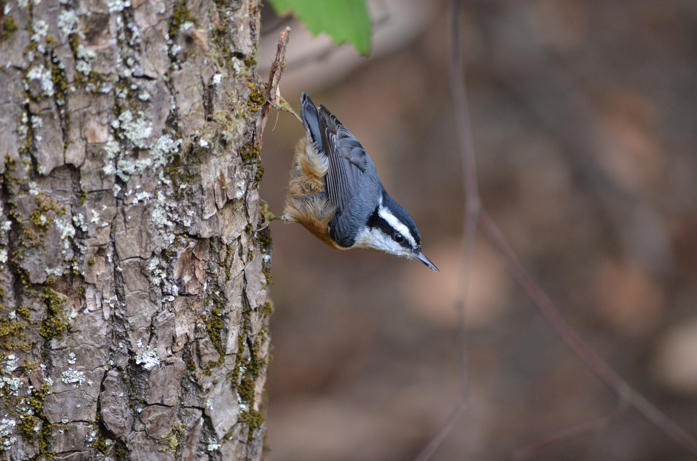
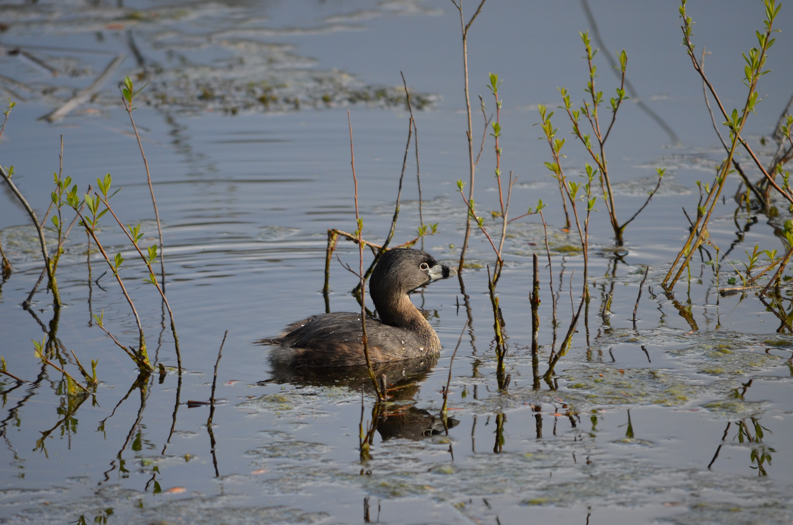
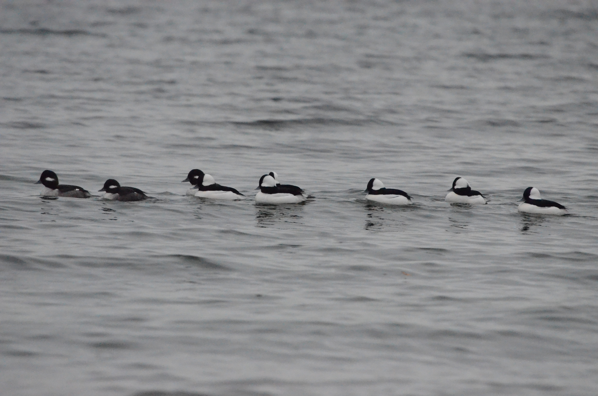

PhD Candidate
University of Washington
Evans School of Public Policy & Governance
mnepf@uw.edu

I enjoy birding with my fiancée. We spend much of our free time exploring the landscapes and habitats of the Pacific Northwest. This page is a collection of photographs, observations, and notes from some of our birding trips.
Explore my recent bird observations, including an interactive map and table of species, locations, and dates.






